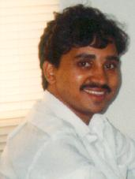

WEEKEND THOUGHTS # 7

Hi!
"A tenner!" exclaimed Unata, as he barged into my office. "A tenner, or else, all will be lost!" I'd heard this before. If you believed Unata, you'd think that the future of humanity rested on his obtaining a ten-dollar note from me at that very instant. In reality, it would simply mean his going a bit hungry during lunch. Unata, by the way, is a friend. Unata Aryabhatt is his name. You'd be hard put to find a more engaging character on this planet.
I pretended as if I'd not heard anything. I looked up from my desk, and peered at him intently. He shifted uncomfortably. "I know I already owe you twenty bucks, chappie, but you see ..." he trailed off. I held up my hand. "Thirty bucks, Unata, thirty. But that's not the point. I'm trying hard to remember the name of the famous king was who thrived under the tutelage of Chanakya. Do you happen to know?" Unata eyed me suspiciously. "Some kind of trick question, I'm sure," he concluded. I assured him that it was not, and that it had to do with this excellent article I had received from Vancouver, Canada. At the mention of "Vancouver," Unata sat upright in his chair. "Ho!" he said, at length. "Amitabh! Maybe this gentleman can help me. You see, I have this errr... friend of mine, Cynthia. Now, she's from Vancouver, and I was wondering if ..."
Needless to say, the discussion took a highly personal turn from this point on, and I feel I shall be doing a huge service to mankind if I refrain from disclosing the details of the conversation that followed.
Chanakya figures prominently in the Weekend Thoughts column for this week, as do two other influential figures in the history of India. The expert pensmanship of Dr Satyabrata Pradhan has brought out some salient, and remarkable, features in the lives and styles of three people who wielded great (albeit indirect) power in their times. Dr Pradhan is a distinguished scientist working in Vancouver, Canada, in aerospace engineering and satellite research. Probably one of these days he will provide us with a unique perspective of the movie, "Apollo 13": how real did it all seem to those for whom space travel is very much a reality, not some fantastic, dream-like phenomenon?
The review is by Asish Dash from the University of Minnesota. Ornet readers would probably recall this young contributor from his conscientious and thoughtful postings on Ornet. In his review, too, Asish reveals a straightforward and frank outlook towards life.
Hope you enjoy reading this article. Thanks -
Amitabh Mishra March 22, 1996
(amishra@cadev6.intel.com)
Name: Satyabrata Pradhan Email Address: satya@mech.ubc.ca Education: PhD, Univ. of British Columbia, Vancouver, Canada, Master's, Indian Institute of Science, Bangalore, India, Bachelor's, Univ. College of Engineering, Burla. Occupation: Working at the Univ. of British Columbia as a post doctoral fellow in the area of dynamics and control of satellites, particularly tethered satellites. One of these satellites was launched in the last shuttle mission.
Sri Krishna, Chanakya and Gandhi
Milestones in Indian Culture
The personalities of certain individuals has played a major role in shaping the socio-political history of many cultures. In the Indian context, three individuals stand out from a list of many. The official power these personalities had, is the major feature which makes them so special. They also belong to three distinct times in the Indian history. They are: Sri Krishna of the Mahabharat war; acharya Vishnugupta (Chanakya), the teacher of the first Mauryan king (Chandragupta Maurya); and Mohandas Karamchand Gandhi, the leader of the Indian independence movement. These individuals were visionaries and held position of advisors. But in reality, they successfully commanded the movements of their time. This particular feature makes these people so special among many reformers and leaders. The objective of this essay is to compare the objectives and strategies of these visionaries.
Sri Krishna, who lived around 3100 B.C. (according to Indian literary sources), was a key figure in the Mahabharat war. The historical proof of the war and its dating are controversial issues. Many researchers from the West would place the war somewhere between 400 and 1000 B.C. (if at all it happened). Chanakya was the person whose vision and strategy changed the political landscape of the Indian subcontinent during third century B.C. The third personality, Mahatma Gandhi, is the leader who led India to independence.
Sri Krishna, the military strategist, was an unique personality of ancient times. Like many other great people, his prime objective was to establish justice, law and order in the society. But, the way he participated and achieved the objective is quite interesting. He clearly distinguished between the end and means of a struggle. Both the ends and means are to be compatible with the environment they encounter.
If the goal is achieved, the winner will have full control of the situation at the end. Therefore, the ideals for the end can be based completely on the principles of the winning side. However, while achieving the goal, the environment is controlled by both the parties involved in the conflict and they might have different, sometimes contradicting, views. Therefore, the means to achieve the goal has to consider not only the physical strength of the opponent, but also the other ideological view. This is a very important point that can be learned from the actions of Sri Krishna. For him, there was no absolute rule on how to fight. Rules, being a set of mutually agreeable guidelines, has to be based on the actions of the parties involved.
The goal of Chanakya was a bit different. The moral degradation and corruption in the Nanda dynasty of Magadha forced him to go to Takshyashila, where he became the most renowned professor in political science of his time. His notion of cultural nationalism took the final shape during the invasion of Alexander. At this time the teacher decided to leave the traditional profession and took upon himself the responsibility of protecting the nation which he considered to be independent of the geographical boundaries of small kingdoms.
His initial attempts to unify the local kings and to fight against the Greek invasion was unsuccessful. With the help of some local kings, Greeks were able to occupy the western part of the then India. Alexander appointed a governor and left India. This was followed by the nationalistic movement which overthrew Greek rule and established the Mauryan empire, one of the greatest empires in Indian history.
For Chanakya, the underlying principle for nationhood was derived from the cultural integrity of the people. The geographical boundaries were for convenience in governing the nation. To achieve the goal, his approach has a fundamental similarity with the Sri Krishna's strategy in Mahabharat war. For him, the means to achieve an end has to be in consistency with bahavior of all parties involved. There is no absolute morality which dictates the approaches for a movement. In his strategy, he followed everything to establish the lost cultural integrity of the people and end Greek occupation.
The leader of independent movement, Mahatma Gandhi, occupied exactly the same position as Sri Krishna in the Mahabharat war and Chanakya in the struggle against the Greeks. Gandhi did not have any official position, yet he was the supreme commander of the independent struggle. He did not start the movement, but he gave a new direction to it and led it to a successful end. The independent struggle of India was indeed an experiment for the ideology of non-violent non-cooperation in the political sphere. Like other leaders, Gandhi was a shrewd politician; after all, he was a successful lawyer, who sidelined anybody who opposed his ideology. Of course, he did it by means of non-violent non-cooperation.
The unique similarity between Sri Krishna, Chanakya and Gandhi is that they did not occupy any official position during and after the movements they led. Their higher sense of duty and responsibility was the prime motivation for the struggle. The striking difference between these people is the way they defined the goals and planned strategies. For Sri Krishna, establishing law and order; and for Chanakya, establishing a nation based on cultural integrity of the people was the goal. But for Gandhi, the goal was not to achieve independence, but to free India through non-violent non-cooperation movement. For Sri Krishna and Chanakya, a strategy was simply a mean to an end. Of course, their first priority was a non-violent approach. But, they did not rule out any other possibility. However, for Gandhi, any strategy was an end by itself. Therefore, he never wanted to compromise on his approach of non-violence.
dash0002@gold.tc.umn.edu
University of Minnesota
Hello everybody, My name is Asish Dash. I was asked to review this weekend's "Weeend Thoughts." When reading this article, it is easier to take a historical standpoint. What I mean is view each of the three characters in where they stand in history. Sri Krishna and Chanakya both come from a time period before the common era, while Ghandi comes after the common era. Throughout the essay, you will notice the similarities between Sri Krishna and Chanakya and how they differ from Gandhi.
This article was very interesting, because, as a youth, I did not know about the first two personalities. I knew of Sri Krishna's exsistence, but not the great effect he had on the Mahabharat war. To be completely honest with you I had never heard of Chanakya until this article, so the information on him was well taken. Gandhi of course everybody of this age knows for his wisdom and stature in India.
The theme of the article, I believe, is misfounded. The theme that none of these three great personalities carried an offical position did not matter to me. I have been raised in a society where people outside of the public eye have also accomplished great things, and it is my belief is that one does not have to hold a public standing to be great. It is by your greater responsibility to others, that you will be noticed. If you want to help some part of society in some way, then you do it for the society's sake, not because it is an offical duty that you must do. (I apologize if I have offended anyone by these views of mine.)
In closing, I enjoyed the article very much. I learned much about some of the great people of India, whom I barely knew anything of, except for what was spoken about in school. Seeing their commonality of doing things for society's good, than for any thing else was also inspirational.
Your comments are always welcome...

 Satyabrata Pradhan
Satyabrata Pradhan

Ride back to Home Page...
![[IMAGE]](../../wt/rath.gif)